一天奔赴六地：在密集的脚步中，看见衰老、红包与未变的故里
引子
过年的前一天，是回到的第二天，在镇上呆着实在是过于无聊。
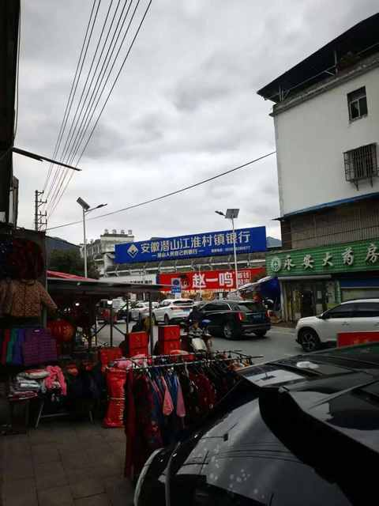
不过，每次回来倒是都有新的发现，这次是发现赵一鸣零食的店在三岔路口的 C 位，招牌醒目且喜庆，省钱超市四个大字能让人更放心的进去逛。
奶奶家的门口倒是没啥变化，依然是乱中有序，莫名的和谐。
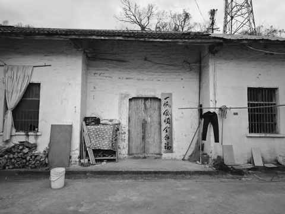
本着来都来了和在一天的时间里尽量多见见人做点事的想法， 当天跑了 6 个地方，去到好几个亲戚家也见到不少人，甚至还提着一箱苹果沿着国道步行 5km。
于是，便有了这次的行程，一个白天，闪现 6 个地方。
第一站：县城小姑家
20 多年前，在县城上高中的时候常去，院子和当初的差别在于两个点：
① 树长大长高了
② 种的菜变多了
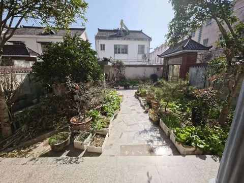
九点到地方，小姑已经去超市上班，临近过年超市里面很忙，不再区分早晚班，近几天要加班，过年当天也要上班到下午 4 点。
小姑爷已经退休两年多，看起来和退休前差别不大，可能是头发依然是乌黑的原因，和退休前给人的感受比较一致。
作为娃姑爷爷的小姑爷给娃塞了一个红包，他自然是难掩高兴，说了声谢谢便收到口袋里面。
简单寒暄一会儿之后，便在堂妹的带领下，去旁边吃早饭。
第二站：小学边的牛肉汤店
本来是想吃安庆炒面，因为最近一年多安庆炒面在网络上挺火的，每次回去也不会特意去县城吃个炒面。
没预料到的是，小学边好几个主做早点的店都关门了，回去过节啦，一行人便来到了开门的牛肉汤店。
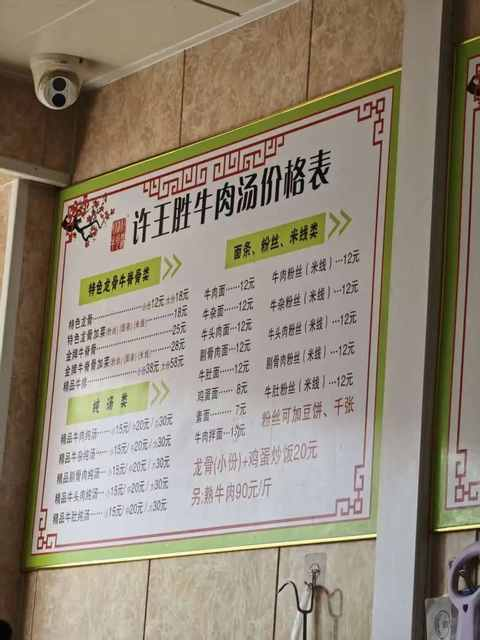
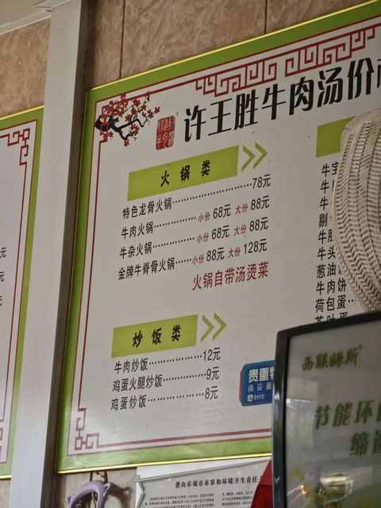
县城的物价是真不便宜，5个人吃早餐花了66，说赶上一线城市夸张了点，但绝对跟合肥不相上下，甚至更贵一点。
具体是点了 1 份炒饭、3 份牛肉粉丝汤、1 份鸡蛋面、1 个茶叶蛋、3 个饼。
第三站：小爷爷家
每年见小爷爷和小奶奶都能深刻的感觉到一点：岁月催人老。
可能是一年仅见1-2次的缘故，对这种老态的变化有很具象化的感受，似乎和看到邻居家的小朋友突然长高了一样。
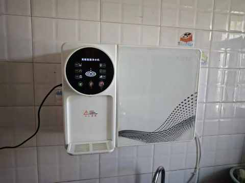
在厨房里面，发现新安装的净水机，能加热和保温，确实比烧水要方便不少。
稍作片刻，快走的时候，作为娃太爷爷的小爷爷塞了一个红包给娃， 他又是说了声谢谢便收到口袋里面。
第四站：养老院
村里的养老院是由大舅负责，里面有20多个孤寡老人，外婆不是孤寡老人，但她隔几个月会需要在养老院住一个月，因为外公过世后，她因为没有固定的住所，要在4个儿子家轮流住。
这次去养老院，主要是把外婆接到我家过年，我也得以进到养老院里面看看。
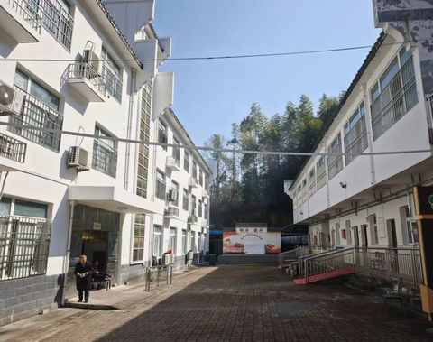
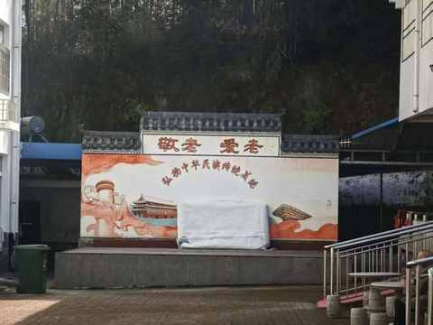
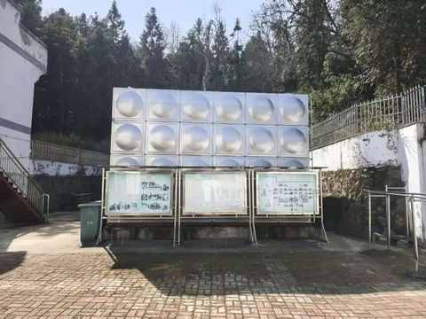
到的时候是 11 点多，正是养老院老人吃午饭的时间，听外婆说养老院的伙食不错，年底也有不少企业家来慰问还能比平时吃的更好一点。
第五站：二叔家
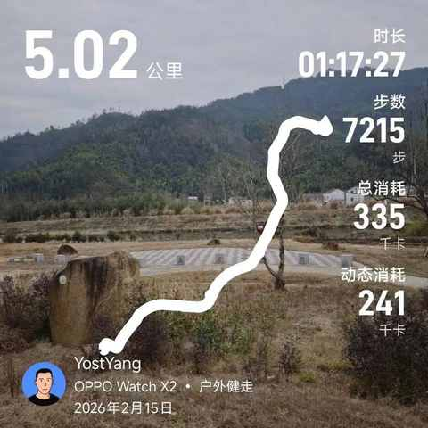
5km，是从自家门口走到他家门口的距离，用运动手表记录的数据。
午饭前临时起意，决定和娃还有两个堂妹一起步行去找另一个小堂妹，她们想都没想就同意了。
午饭后，休息 10 多分钟后正式出发。
路上经过超市，各自买了喜欢的饮料，本着大过年不空手去亲戚家的原则，我还买了一箱苹果，可谓是 “ 负重前行 ” 。
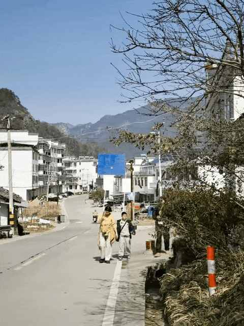
一行 4 个人走了接近 80分钟，乡镇的道路没有红绿灯，好的方面是不用走走停停的被打乱节奏，不好的方面是没理由休息得一直不停的走直到目的地。
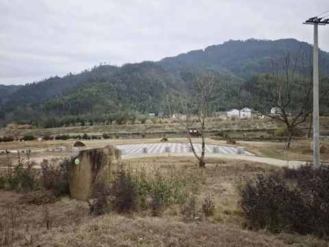
快到的时候看到河边建了一个小公园，但是一个人都没有。
等到地方，和二叔说起那个公园建的不错，但是没人，他说农村人谁没事去公园里面逛，浪费钱。
边休息边聊天，一个多小时后，娃又又又有了一个红包，来自他二爷爷也就是我二叔的红包，走路是真累，收到红包也是掩饰不住的开心。
返程除了我是继续步行，娃和他的两个姑姑都是由小姑姑骑电动车送回去的。
第六站：堂哥家
堂哥家在奶奶家旁边，前几年在老宅的基础上，重新建了两层楼。
红色屋顶，在一众房子中一眼便能被看到。
过去后，先看到的是停在门前的一辆奔驰车。
进门后看到了叔叔和婶婶，和他们感慨下时间过得很快，转眼我都 36 了，堂哥也属马，正好比我大一轮。
人生中第一次具象的感受到，自己距离年过半百越来越近而且在加速靠近。
刚到的时候，堂哥在楼上换灯泡，和叔叔婶婶聊了一会儿后他便下来了，因为在门口看到奔驰，顺嘴问了下为什么没有换问界之类的国产新能源。
由此，便打开了话匣子。
理工男的思维是很严谨的，他 对车的安全、舒适、豪华都很重视，而国产新能车的很多宣传点在于 科技感、彩电冰箱大沙发、辅助驾驶等。
作为工厂的负责人，他接触到的信息和看世界的视角和也我有诸多不同，所以催生出不同的思维逻辑和购买决策。
结语
这次一天六站，像快速翻看一本熟悉的书，却发现有些章节早已悄然改写。
再过两年，便会迎来又一个时间节点：我在家乡以外地方待的时间，将超过在家乡待的时间。
当我待在他乡的时间超过家乡，家乡便不只是我出发的地方，更是记忆与现实的交汇处。
近期文章
想通了！开电车真没必要里程焦虑：一年两万公里，实测续航够用
冬天跑步有感，一件难而正确的事
从插混换到纯电，一年开2万公里后，我已经不在意能耗且没有里程焦虑！
农村、大专生、笨小孩：我的来时路
双持党的秋冬体验：当指纹识别频频失效，才懂得FaceID的好处
35岁的这个11月，我竟挑战了这么多“第一次”
听播客5年，日均108分钟：这3个收获，让我认识到“声音”的力量